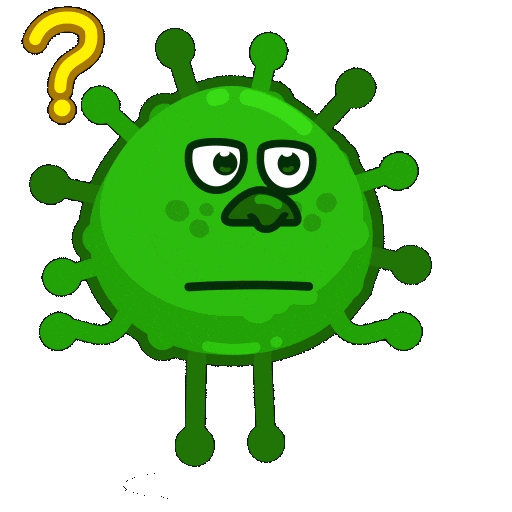
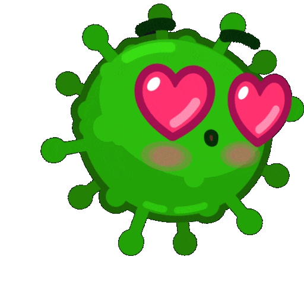

Центр громадського здоров’я (ЦГЗ) інформує про шляхи поширення і варіанти захисту від нового коронавірусу COVID‑19. Наразі відомо, що він передається краплинним та контактним шляхами.
Контактний шлях
Переважає контактний шлях, коли вірус потрапляє на слизові оболонки носа, очей через руки або інші предмети (хустинку, рукавиці) після торкання до об’єктів (тварин, м’яса, риби,
Краплинний шлях
Краплинним шляхом вірус передається від людини до людини під час кашлю або чхання в тісному контакті, коли утворюються краплі діаметром понад 5 мкм. Коронавіруси не здатні зберігати інфектогенність (заразність) під час передавання на далекі відстані. Тому тісним контактом вважають відстань менше 1 м, хоча деякі науковці допускають можливість поширення вірусу (за певних умов) до 2 м.

Повітряний шлях
Повітряним шляхом віруси передаються від людини до людини через аерозольні часточки (діаметром до 5 мкм), які безперешкодно можуть потрапляти в альвеоли та бронхіоли (нижні дихальні шляхи).
